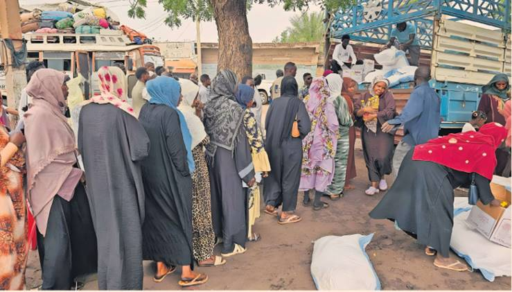

Donald Trump's administration plans to move its rolling peacekeeping efforts to Sudan at a Washington summit with the foreign ministers of Egypt, Saudi Arabia and UAE today where they hope to hammer out a joint position on the devastating two-year-old conflict.
Tens of thousands of people have been killed and 13mn displaced since war erupted in April 2023 after a tussle for power between two military factions, the Sudanese Armed Forces and the paramilitary Rapid Support Forces.
The US rejected a last-minute request by Egypt for representatives of Sudan's government, the SAF, to attend the summit, which is due to be chaired by US secretary of state Marco Rubio, said people briefed on the talks. The state department declined to comment.
Cameron Hudson, senior fellow at the Washington-based Center for Strategic and International Studies, said US peace efforts under Trump were characterised by what he called a pattern of "fly by the seat of the pants-style diplomacy". There was "minimal preparation" and a hope that "just getting people in a room is sufficient", he said.
The push in Sudan follows so far unsuccessful attempts to resolve conflicts in Ukraine and Gaza. But the Trump administration did broker a tentative peace deal between the Democratic Republic of Congo and Rwanda at a meeting in Washington last month, led by Massad Boulos, Trump's main Africa adviser and the father-in-law of his daughter, Tiffany. Trump hailed the agreement as a reason he should be awarded the Nobel peace prize.
The summit will not be the first international effort to negotiate peace in Sudan, with ceasefires repeatedly breaking down in 2024 and unsuccessful attempts at mediation by Qatar, Turkey and the UK, among others. Under former president Joe Biden, the US sent special envoy Tom Perriello to the region.
On Saturday, the rebel RSF, which controls roughly 40 per cent of Sudanese territory, entrenched its position by declaring itself a parallel government. The SAF government force this year retook the capital, Khartoum, which it had abandoned early in the war, but it still remains based in the alternative capital of Port Sudan on the Red Sea coast.
Experts said the RSF's move to declare itself a parallel government, which cements a de facto partition of the country, signalled its determination not to be sidelined from the peace process. It also potentially gave the RSF more leverage over the flow of aid, both to areas it controls and to contiguous SAF-run regions, they said.
Some analysts suggested that the RSF, which the Biden administration accused of genocide in Darfur in the west of the country, might also now find it easier to purchase more advanced military hardware, including fighter jets. The RSF is backed by the United Arab Emirates, according to several UN reports and on-the-ground accounts, though the Emiratis have denied supporting either side in the conflict.
Ahmed Soliman, a Horn of Africa expert at Chatham House, said the RSF was attempting to assert its authority over areas it controlled and to bolster its national legitimacy as the representative of regions including Darfur and parts of Kordofan. He said: "The key problem with this is that it will be impossible to convince most Sudanese that the RSF and its administration stand for the voices of the marginalised, given the heinous and widespread atrocities they are responsible for."
Kholood Khair, director of Confluence Advisory, a think-tank formerly based in Khartoum, said the planned summit was important because it was the "first mediation under Trump". However, she added that the administration had sacked most of its experienced Sudan analysts, leaving it with a lack of people who understood the roots of the crisis.
Given Trump's "transactional approach" towards peacekeeping, Khair said she worried about a hastily concocted military and economic carve-up that shut out Sudanese stakeholders, particularly the grassroots civilian movement. "The plane is being built while it's in the air," she said of the mediation process.
There were dozens of militia fighting in Sudan in addition to the two main forces, Khair added, meaning that, even if Washington could persuade the SAF and the RSF to make peace, "that would not necessarily lead to an end of the war". It was even conceivable that other militias could declare themselves a government in certain regions, she said, further fragmenting a country that had already split into two with the creation of South Sudan in 2011.